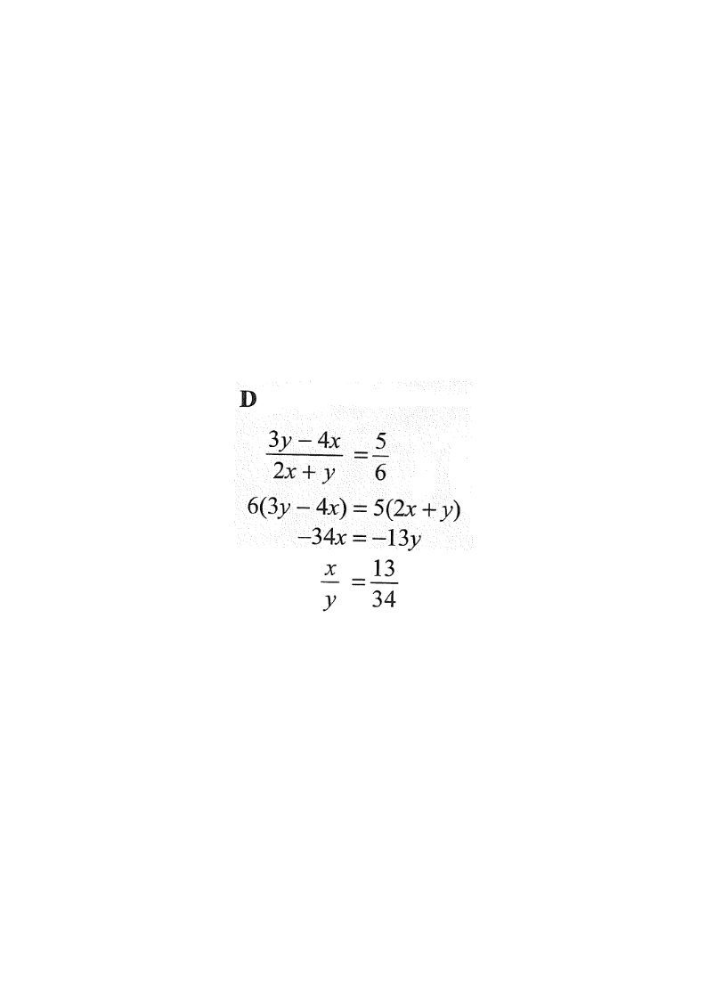

Step 1 — Reading the given ratio.
Topic: Rate, Ratio and Variations
If $x$ and $y$ are non-zero numbers such that
\[(3y-4x):(2x+y)=5:6,\]
then $x:y=$

A ratio $a:b = c:d$ means $\dfrac{a}{b}=\dfrac{c}{d}$. So the given ratio becomes
\[\frac{3y-4x}{2x+y}=\frac{5}{6}.\]
Multiply both sides by $6(2x+y)$ (valid since $x,y\neq 0$ and $2x+y\neq 0$):
\[6(3y-4x)=5(2x+y).\]
\[18y-24x=10x+5y.\]
Move the $x$-terms to the left and the $y$-terms to the right:
\[18y-5y=10x+24x\]
\[13y=34x.\]
Divide both sides by $34y$ (allowed as $y\neq 0$):
\[\frac{x}{y}=\frac{13}{34}\]
Hence
\[x:y=13:34.\]